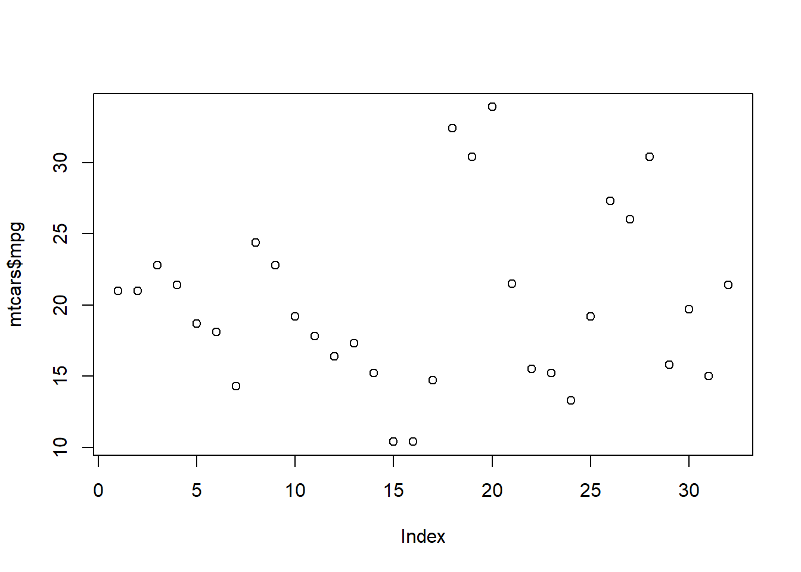
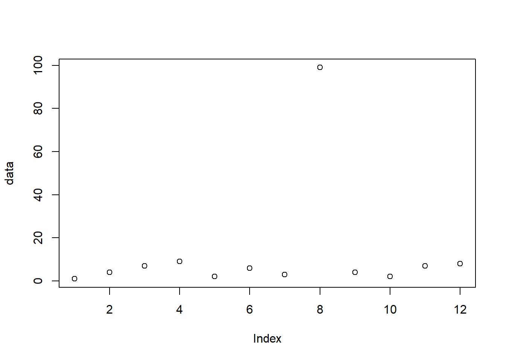
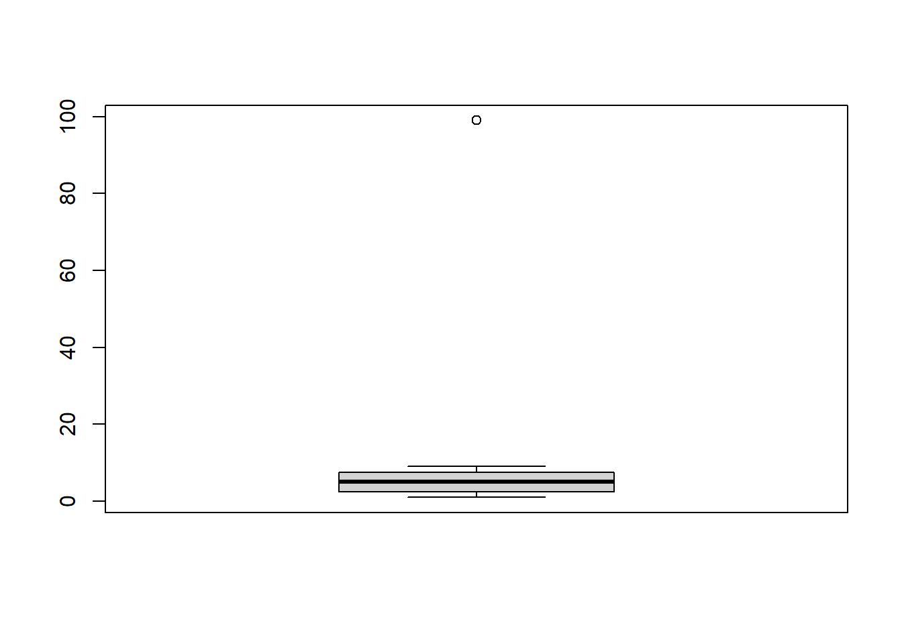
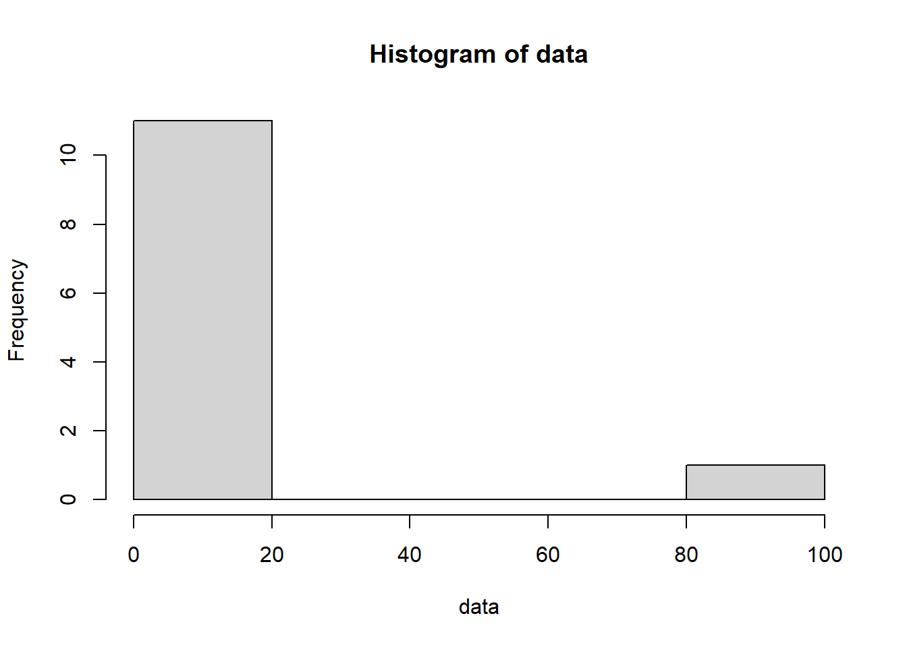
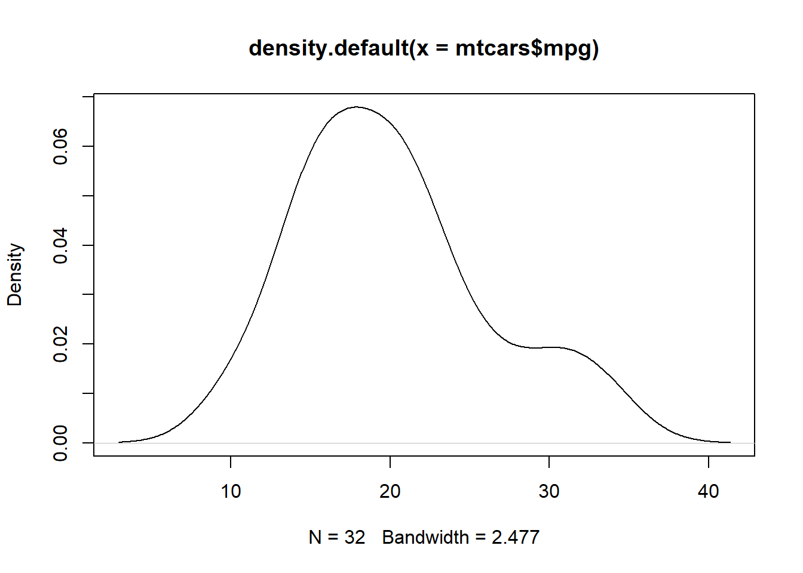
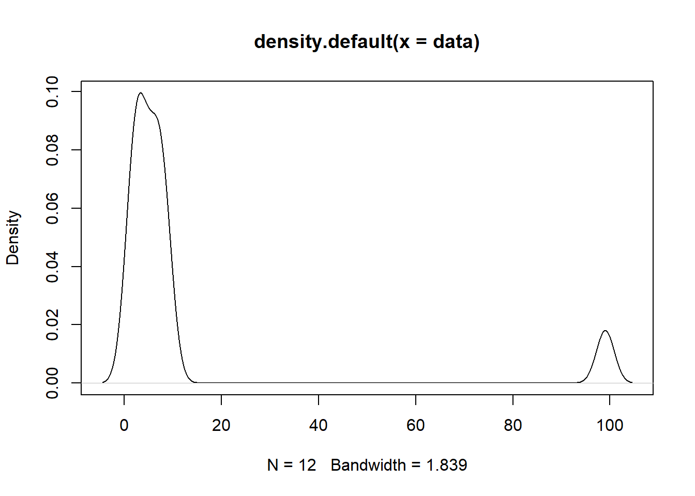

df <- head(iris)
print(df)4 Data Cleaning
This chapter will cover the basics of cleaning your data including renaming variables, splitting text, replacing values, dropping columns, and dropping rows. These basic actions will be essential to preparing your data prior to developing insights.
4.1 Renaming Variables
Let’s begin by creating a dataset we can use to work through some examples. In our case, we’ll take the first few rows from the “iris” dataset and create a new dataframe called “df”.
| Sepal.Length | Sepal.Width | Petal.Length | Petal.Width | Species |
|---|---|---|---|---|
| 5.1 | 3.5 | 1.4 | 0.2 | setosa |
| 4.9 | 3.0 | 1.4 | 0.2 | setosa |
| 4.7 | 3.2 | 1.3 | 0.2 | setosa |
| 4.6 | 3.1 | 1.5 | 0.2 | setosa |
| 5.0 | 3.6 | 1.4 | 0.2 | setosa |
| 5.4 | 3.9 | 1.7 | 0.4 | setosa |
Now, let’s adjust our column names (otherwise known as variables) to be “snake case” (a method to name variables in which all words are lowercase and separated by underscores). We’ll do this through the use of the “colnames” function. In the following example, we are renaming each column individually by specifying what number column to adjust.
colnames(df)[1] <- "sepal_length"
colnames(df)[2] <- "sepal_width"
colnames(df)[3] <- "petal_length"
colnames(df)[4] <- "petal_width"
colnames(df)[5] <- "species"| sepal_length | sepal_width | petal_length | petal_width | species |
|---|---|---|---|---|
| 5.1 | 3.5 | 1.4 | 0.2 | setosa |
| 4.9 | 3.0 | 1.4 | 0.2 | setosa |
| 4.7 | 3.2 | 1.3 | 0.2 | setosa |
| 4.6 | 3.1 | 1.5 | 0.2 | setosa |
| 5.0 | 3.6 | 1.4 | 0.2 | setosa |
| 5.4 | 3.9 | 1.7 | 0.4 | setosa |
Let’s adjust our column names again but to be “camel case” this time. Camel casing requires the first word in a name to be lowercase with all subsequent words having the first letter capitalized. Instead of using the column number though, this time we’ll use the actual name of the column we want to adjust.
colnames(df)[colnames(df) == "sepal_length"] <- "sepalLength"
colnames(df)[colnames(df) == "sepal_width"] <- "sepalWidth"
colnames(df)[colnames(df) == "petal_length"] <- "petalLength"
colnames(df)[colnames(df) == "petal_width"] <- "petalWidth"| sepalLength | sepalWidth | petalLength | petalWidth | species |
|---|---|---|---|---|
| 5.1 | 3.5 | 1.4 | 0.2 | setosa |
| 4.9 | 3.0 | 1.4 | 0.2 | setosa |
| 4.7 | 3.2 | 1.3 | 0.2 | setosa |
| 4.6 | 3.1 | 1.5 | 0.2 | setosa |
| 5.0 | 3.6 | 1.4 | 0.2 | setosa |
| 5.4 | 3.9 | 1.7 | 0.4 | setosa |
Alternatively, you can use the “rename” function from the “dplyr” library.
library(dplyr)
df <- rename(df, "plantSpecies" = "species")| sepalLength | sepalWidth | petalLength | petalWidth | plantSpecies |
|---|---|---|---|---|
| 5.1 | 3.5 | 1.4 | 0.2 | setosa |
| 4.9 | 3.0 | 1.4 | 0.2 | setosa |
| 4.7 | 3.2 | 1.3 | 0.2 | setosa |
| 4.6 | 3.1 | 1.5 | 0.2 | setosa |
| 5.0 | 3.6 | 1.4 | 0.2 | setosa |
| 5.4 | 3.9 | 1.7 | 0.4 | setosa |
4.2 Splitting Text
If you’ve worked in a spreadsheet application before, you’re likely familiar with the “text-to-columns” tool. This tool allows you to split one column of data into multiple columns based on a delimiter. This same functionality is also achievable in R through functions such as the “separate” function from the “tidyr” library.
To test this function out, let’s first require the “tidyr” library and then create a test dataframe for us to use.
library(tidyr)
df <- data.frame(person = c("John_Doe", "Jane_Doe"))| person |
|---|
| John_Doe |
| Jane_Doe |
We now have a dataframe with one column which contains a first name and a last name combined by an underscore. Let’s now split the two names into their own separate columns.
df <- df %>% separate(person, c("first_name", "last_name"), "_")| first_name | last_name |
|---|---|
| John | Doe |
| Jane | Doe |
Let’s break down what just happened. We first declared that “df” was going to be equal to the output of the function that followed by typing “df <-”. Next we told the separate function that it would be altering the existing dataframe called “df” by typing “df %>%”.
We then gave the separate function three arguments. The first argument was the column we were going to be editing, “person”. The second argument was the names of our two new columns, “first_name” and “last_name”. Finally, the third argument was our desired delimiter, “_“.
4.3 Replace Values
We’ll next go over how you can replace specific values in a dataset. Let’s begin by creating a dataset to work with. The following example will create a dataframe which contains student names and their respective grades on a test.
students <- c("John", "Jane", "Joe", "Janet")
grades <- c(83, 97, 74, 27)
df <- data.frame(student = students, grade = grades)| student | grade |
|---|---|
| John | 83 |
| Jane | 97 |
| Joe | 74 |
| Janet | 27 |
Now that our dataset is assembled, let’s decide that we’re going to institute a minimum grade of 60. To do this we’re going to need to replace any grade lower than 60 with 60. The following example demonstrates one way you could accomplish that.
df[which(df$"grade" < 60), "grade"] <- 60| student | grade |
|---|---|
| John | 83 |
| Jane | 97 |
| Joe | 74 |
| Janet | 60 |
4.4 Drop Columns
Let’s use the “mtcars” dataset to demonstrate how to drop columns
df <- head(mtcars)
print(df)| mpg | cyl | disp | hp | drat | wt | qsec | vs | am | gear | carb | |
|---|---|---|---|---|---|---|---|---|---|---|---|
| Mazda RX4 | 21.0 | 6 | 160 | 110 | 3.90 | 2.620 | 16.46 | 0 | 1 | 4 | 4 |
| Mazda RX4 Wag | 21.0 | 6 | 160 | 110 | 3.90 | 2.875 | 17.02 | 0 | 1 | 4 | 4 |
| Datsun 710 | 22.8 | 4 | 108 | 93 | 3.85 | 2.320 | 18.61 | 1 | 1 | 4 | 1 |
| Hornet 4 Drive | 21.4 | 6 | 258 | 110 | 3.08 | 3.215 | 19.44 | 1 | 0 | 3 | 1 |
| Hornet Sportabout | 18.7 | 8 | 360 | 175 | 3.15 | 3.440 | 17.02 | 0 | 0 | 3 | 2 |
| Valiant | 18.1 | 6 | 225 | 105 | 2.76 | 3.460 | 20.22 | 1 | 0 | 3 | 1 |
Next, we can either drop columns by specifying the columns we want to keep or by specifying the ones we want to drop. The following example will get rid of the “carb” column by specifying that we want to keep every other column.
df <- subset(df, select = c(mpg, cyl, disp, hp, drat, wt, qsec, vs, am, gear))| mpg | cyl | disp | hp | drat | wt | qsec | vs | am | gear | |
|---|---|---|---|---|---|---|---|---|---|---|
| Mazda RX4 | 21.0 | 6 | 160 | 110 | 3.90 | 2.620 | 16.46 | 0 | 1 | 4 |
| Mazda RX4 Wag | 21.0 | 6 | 160 | 110 | 3.90 | 2.875 | 17.02 | 0 | 1 | 4 |
| Datsun 710 | 22.8 | 4 | 108 | 93 | 3.85 | 2.320 | 18.61 | 1 | 1 | 4 |
| Hornet 4 Drive | 21.4 | 6 | 258 | 110 | 3.08 | 3.215 | 19.44 | 1 | 0 | 3 |
| Hornet Sportabout | 18.7 | 8 | 360 | 175 | 3.15 | 3.440 | 17.02 | 0 | 0 | 3 |
| Valiant | 18.1 | 6 | 225 | 105 | 2.76 | 3.460 | 20.22 | 1 | 0 | 3 |
Alternatively, let’s try gettig rid of the “gear” column directly. We can do this by putting a “-” in front of the “c” function.
df <- subset(df, select = -c(gear))| mpg | cyl | disp | hp | drat | wt | qsec | vs | am | |
|---|---|---|---|---|---|---|---|---|---|
| Mazda RX4 | 21.0 | 6 | 160 | 110 | 3.90 | 2.620 | 16.46 | 0 | 1 |
| Mazda RX4 Wag | 21.0 | 6 | 160 | 110 | 3.90 | 2.875 | 17.02 | 0 | 1 |
| Datsun 710 | 22.8 | 4 | 108 | 93 | 3.85 | 2.320 | 18.61 | 1 | 1 |
| Hornet 4 Drive | 21.4 | 6 | 258 | 110 | 3.08 | 3.215 | 19.44 | 1 | 0 |
| Hornet Sportabout | 18.7 | 8 | 360 | 175 | 3.15 | 3.440 | 17.02 | 0 | 0 |
| Valiant | 18.1 | 6 | 225 | 105 | 2.76 | 3.460 | 20.22 | 1 | 0 |
One other way you could drop columns if you wanted to use index numbers rather than column names is demonstrated below.
df <- df[,-c(1,3:7)]| cyl | vs | am | |
|---|---|---|---|
| Mazda RX4 | 6 | 0 | 1 |
| Mazda RX4 Wag | 6 | 0 | 1 |
| Datsun 710 | 4 | 1 | 1 |
| Hornet 4 Drive | 6 | 1 | 0 |
| Hornet Sportabout | 8 | 0 | 0 |
| Valiant | 6 | 1 | 0 |
As you can see, we used the square brackets to select a subset of our dataframe and then pasted our values after the comma to declare that we were choosing columns rather than rows. After that we used the “-” symbol to say that we were choosing columns to drop rather than columns to keep. Finally, we chose to drop columns 1 as well as columns 3 through 7.
4.5 Drop Rows
We are also able to drop rows with the same method we just used to drop columns with the difference being that we would place our values in front of the comma rather than after the comma. For example, if we wanted to drop the first two rows (otherwise known as observations) from our previous dataframe, we could do the following.
df <- df[-c(1:2),]| cyl | vs | am | |
|---|---|---|---|
| Datsun 710 | 4 | 1 | 1 |
| Hornet 4 Drive | 6 | 1 | 0 |
| Hornet Sportabout | 8 | 0 | 0 |
| Valiant | 6 | 1 | 0 |
4.6 Resources
- “Separate” function documentation: https://tidyr.tidyverse.org/reference/separate.html
5 Handling Missing Data
You may encounter situations while analysing data that some of your data are missing. This chapter will cover best practices in regards to handling these situations as well as the technical details on how to remedy the data.
Missing data will often be represented by either “NA” or “” in R. Sometimes you will be able to manage by just ignoring this data; however, other times you will need to “impute” the missing data. This just means you end up coming up with a value that makes sense to use in place of the missing data. The three imputation methods we are going to cover in this chapter are constant vaue imputation, central tendency imputation, and multiple imputation.
5.1 Handling NA/Blank Values
This section will cover common methods and formulas for identifying and isolating missing data. Let’s start by creating a a vector with one “” value and a vector with one “NA” value.
blanks <- c("John", "Jane", "")
nas <- c(NA, "Jane", "Joe")print(blanks)[1] "John" "Jane" "" print(nas)[1] NA "Jane" "Joe" We can use the “is.na” function to identify data with “NA” values. The following example demonstrates how the function works. The output ends up being a “TRUE” or “FALSE” to designate whether each observation is an “NA” value.
is.na(nas)[1] TRUE FALSE FALSEWe can then take this one step further and use the function to filter for “NA” values.
only_nas <- nas[is.na(nas)]
print(only_nas)[1] NAThis works great; however, it’s more likely that you would want to see the values which aren’t equal to “NA”. This can be accomplished by using the “NOT” operator “!”.
no_nas <- nas[!is.na(nas)]
print(no_nas)[1] "Jane" "Joe" If your missing data is just an empty string (““) rather than an”NA” value, you can use simple comparison operators to accomplish the same thing.
blanks == ""[1] FALSE FALSE TRUEonly_blanks <- blanks[blanks == ""]
print(only_blanks)[1] ""no_blanks <- blanks[blanks != ""]
print(no_blanks)[1] "John" "Jane"When working with dataframes rather than just vectors, you can also use the “na.omit” function to remove complete rows with “NA” values.
students <- c("John", "Jane", "Joe")
scores <- c(100, 80, NA)
df <- data.frame(student = students, score = scores)
print(df) student score
1 John 100
2 Jane 80
3 Joe NAdf <- na.omit(df)
print(df) student score
1 John 100
2 Jane 805.2 Constant Value Imputation
Many datasets you encounter will likely be missing data. The temptation may be to immediately disregard these observations; however, it’s important to consider what missing data represents in the context of your dataset as well as the context of what your analysis is hoping to achieve. For example, say you are a teacher and you are trying to determine the average test scores of your students. You have a dataset which lists your students names along with their respective test scores. However, you find that one of your students has an “NA” value in place of a test score.
students <- c("John", "Jane", "Joe")
scores <- c(100, 80, NA)
df <- data.frame(student = students, score = scores)
print(df) student score
1 John 100
2 Jane 80
3 Joe NADepending on the context, it may make sense for you to ignore this observation prior to calculating the average score. It could also make sense for you to assign a value of “0” to this student’s test score.
Let’s demonstrate how you would replace “NA” values with a constant value of “0”.
df[is.na(df)] <- 0
print(df) student score
1 John 100
2 Jane 80
3 Joe 05.3 Central Tendency Imputation
Two of the most common measures of central tendency are “mean” and “median”. Suppose you have a dataset that tracks the time employees spend performing a certain task. After review, you realize that several employees have not historically tracked their time. Instead of just ignoring these entries, you decide to try imputing these values.
employees <- c("John", "Jane", "Joe", "Janet")
hours_spent <- c(12, 14, NA, 9)
df <- data.frame(employee = employees, hours_spent = hours_spent)
print(df) employee hours_spent
1 John 12
2 Jane 14
3 Joe NA
4 Janet 9The following example demonstrates how you can replace missing values with an average of the rest of the employees’ time spent.
mean_value <- mean(df$hours_spent[!is.na(df$hours_spent)])
print(mean_value)[1] 11.66667df$hours_spent[is.na(df$hours_spent)] <- mean_value
print(df) employee hours_spent
1 John 12.00000
2 Jane 14.00000
3 Joe 11.66667
4 Janet 9.00000Alternatively, we can reset our dataframe and replace “NA” values with the median value by doing the following.
# RESET DATAFRAME
df$hours_spent <- hours_spent
# SET MISSING VALUES TO MEDIAN
median_value <- median(df$hours_spent[!is.na(df$hours_spent)])
print(median_value)[1] 12df$hours_spent[is.na(df$hours_spent)] <- median_value
print(df) employee hours_spent
1 John 12
2 Jane 14
3 Joe 12
4 Janet 95.4 Multiple Imputation
The two previous examples are types of “single value imputaion” as both examples took one value and applied it to every missing value in the dataset. At a very basic level, multiple imputation requires users to come up with some sort of model to fill in missing values. In the following example we are going to demonstrate how you might use a simple linear regression model to perform multiple imputation.
Note
Linear regression is covered more in-depth later in this book. Don’t worry if this example feels completely unfamiliar at this point.
We’ll begin by creating a dataframe with both an “x” and a “y” variable.
y <- c(10, 8, NA, 9, 4, NA)
x <- c(8, 6, 9, 7, 2, 12)
df <- data.frame(y = y, x = x)
print(df) y x
1 10 8
2 8 6
3 NA 9
4 9 7
5 4 2
6 NA 12Next, let’s use the “lm” function to create a linear model and then print out a summary of that model.
model <- lm(y ~ x)
summary(model)Warning in summary.lm(model): essentially perfect fit: summary may be unreliable
Call:
lm(formula = y ~ x)
Residuals:
1 2 4 5
0 0 0 0
Coefficients:
Estimate Std. Error t value Pr(>|t|)
(Intercept) 2 0 Inf <2e-16 ***
x 1 0 Inf <2e-16 ***
---
Signif. codes: 0 '***' 0.001 '**' 0.01 '*' 0.05 '.' 0.1 ' ' 1
Residual standard error: 0 on 2 degrees of freedom
(2 observations deleted due to missingness)
Multiple R-squared: 1, Adjusted R-squared: 1
F-statistic: Inf on 1 and 2 DF, p-value: < 2.2e-16From the model summary, we can see that we have a model with a high level of statistical significance. Let’s now use the model coefficients to impute our missing values.
x_coefficient <- model$coefficients["x"]
intercept <- model$coefficients["(Intercept)"]
x_var <- df$x[is.na(df$y)]
df$y[is.na(df$y)] <- x_var * x_coefficient + intercept
print(df) y x
1 10 8
2 8 6
3 11 9
4 9 7
5 4 2
6 14 125.5 Resources
- “Missing-data Imputation” from Columbia: http://www.stat.columbia.edu/~gelman/arm/missing.pdf
6 Outliers
Outliers are observations that fall outside the expected scope of the dataset. It’s important to identify outliers in your data and determine the necessary treatment for them before moving into the next analysis phase.
might be necessary to impute value, remove row or may be necessary to keep the data besides extreme value
6.1 Finding Outliers Visually
One common first step many people employ when looking for outliers is visualizing their datasets so that exterme values can be quickly identified. This section will briefly cover several common visualizations used to identify outlier; however, each of these plots will be explored more in-depth later in the book.
6.1.1 Scatter Plot
This is probably the first plot you’ll reach for when trying to visualize outliers in your data. The scatter plot is a great tool to quickly visualize your data at a high level and see if anything major stands out.
plot(mtcars$mpg)
Here’s how a scatter plot with an extreme outlier might look.
data <- c(1,4,7,9,2,6,3,99,4,2,7,8)
plot(data)
6.1.2 Box Plot
Another way to quickly visualize outliers is to use the “boxplot” function. This plot will allow you to evaluate outliers in a more systematic way.
boxplot(mtcars$mpg)
The solid black line represents the median value of your dataset. The top and bottom “whiskers” represent your extreme values (minimum and maximum). The top and bottom of the “box” represent the first and third quartile.
Here’s an example of a box plot with an extreme outlier.
boxplot(data)
6.1.3 Histogram
Histograms will allow you to see how often values occur within certain buckets.
hist(mtcars$mpg)
Here’s a histogram with data that contains an outlier.
hist(data)
6.1.4 Density Plot
Density plots allow you to see the distribution of your data in a more continuous manner than you might be able to achieve with a histogram.
plot(density(mtcars$mpg))
Here’s an example of a density plot with data that contains an outlier.
plot(density(data))
6.2 Finding Outliers Statistically
While examining your data visually may be a convenient and sufficient way to detect outliers in your data, sometimes you may require a more rigorous approach to outlier detection.
6.2.1 Standard Deviation
One simple way to check the extremity of your observation is to calculate how many standard deviations it falls from the mean.
Let’s start by calculating the standard deviation of our dataset by using the “sd” function.
sd <- sd(data)
print(sd)[1] 27.31078Next, let’s calculate the mean of our dataset.
mean <- mean(data)
print(mean)[1] 12.66667Finally, for each record in our vector, let’s calculate how many standard deviations it falls from the mean.
extremity <- abs(data - mean) / sd
print(extremity) [1] 0.4271817 0.3173350 0.2074883 0.1342571 0.3905661 0.2441038 0.3539506
[8] 3.1611447 0.3173350 0.3905661 0.2074883 0.17087276.3 Removing Outliers
After identifying your outliers you have several options to remove them.
Your first option would be to manually remove a specific outlier.
manually_cleaned <- data[data != 99]
print(manually_cleaned) [1] 1 4 7 9 2 6 3 4 2 7 8A more robust option would be to rely on your previously performed calculations to remove any observations which are located too far away from the mean.
statistically_cleaned <- data[extremity < 3]
print(statistically_cleaned) [1] 1 4 7 9 2 6 3 4 2 7 86.4 Resources
“Statistics - Standard Deviation” by W3 Schools: https://www.w3schools.com/statistics/statistics_standard_deviation.php
7 Organizing Data
This chapter will focus on sorting, filtering, and grouping your datasets.
7.1 Sort, Order, and Rank
Three functions you may use to organize your data are “sort”, “order”, and “rank”. The following examples will go through each one and show you how to use them.
Let’s start by creating a vector to work with.
completed_tasks <- c(5, 9, 3, 2, 7)
print(completed_tasks)[1] 5 9 3 2 7Next we’ll sort our data by using the “sort” function. This function will return your original data but sorted in ascending order.
sort(completed_tasks)[1] 2 3 5 7 9Alternatively, you can set the “decreasing” parameter to “TRUE” to sort your data in descending order.
sort(completed_tasks, decreasing = TRUE)[1] 9 7 5 3 2The “order” function will return the index of each item in your vector in sorted order. This function also has a “decreasing” parameter which can be set to “TRUE”.
order(completed_tasks)[1] 4 3 1 5 2Finally, the “rank” function will return the rank of each item in your vector in ascending order.
rank(completed_tasks)[1] 3 5 2 1 47.2 Filtering
You may have noticed in previous chapters that we’ve used comparison operators to filter our data. Let’s review by filtering out completed tasks greater than or equal to 7.
completed_tasks[completed_tasks < 7][1] 5 3 2Alternatively, you can use the “filter” function from the “dplyr” library. Let’s use this function with the “iris” dataset to filter out any species which isn’t virginica.
head(iris)| Sepal.Length | Sepal.Width | Petal.Length | Petal.Width | Species |
|---|---|---|---|---|
| 5.1 | 3.5 | 1.4 | 0.2 | setosa |
| 4.9 | 3.0 | 1.4 | 0.2 | setosa |
| 4.7 | 3.2 | 1.3 | 0.2 | setosa |
| 4.6 | 3.1 | 1.5 | 0.2 | setosa |
| 5.0 | 3.6 | 1.4 | 0.2 | setosa |
| 5.4 | 3.9 | 1.7 | 0.4 | setosa |
library(dplyr)
virginica <- filter(iris, Species == "virginica")| Sepal.Length | Sepal.Width | Petal.Length | Petal.Width | Species |
|---|---|---|---|---|
| 6.3 | 3.3 | 6.0 | 2.5 | virginica |
| 5.8 | 2.7 | 5.1 | 1.9 | virginica |
| 7.1 | 3.0 | 5.9 | 2.1 | virginica |
| 6.3 | 2.9 | 5.6 | 1.8 | virginica |
| 6.5 | 3.0 | 5.8 | 2.2 | virginica |
| 7.6 | 3.0 | 6.6 | 2.1 | virginica |
7.3 Grouping
One final resource for you to leverage as you organize your data is the “group_by” function from the “dplyr” library.
If we wanted to group the iris dataset by species we might do something similar to the following example.
library(dplyr)
grouped_species <- iris %>% group_by(Species)Now if we print out our resulting dataset you’ll notice that the “group_by” operation we just performed doesn’t change how the data looks by itself.
head(grouped_species)| Sepal.Length | Sepal.Width | Petal.Length | Petal.Width | Species |
|---|---|---|---|---|
| 5.1 | 3.5 | 1.4 | 0.2 | setosa |
| 4.9 | 3.0 | 1.4 | 0.2 | setosa |
| 4.7 | 3.2 | 1.3 | 0.2 | setosa |
| 4.6 | 3.1 | 1.5 | 0.2 | setosa |
| 5.0 | 3.6 | 1.4 | 0.2 | setosa |
| 5.4 | 3.9 | 1.7 | 0.4 | setosa |
In order to change the structure of our dataset we’ll need to specify how our groups should be treated by combining the “group_by” function with another dplyr “verb” such as “summarise”.
grouped_species <- grouped_species %>% summarise(
sepal_length = mean(Sepal.Length),
sepal_width = mean(Sepal.Width),
petal_length = mean(Petal.Length),
petal_width = mean(Petal.Width)
)head(grouped_species)| Species | sepal_length | sepal_width | petal_length | petal_width |
|---|---|---|---|---|
| setosa | 5.006 | 3.428 | 1.462 | 0.246 |
| versicolor | 5.936 | 2.770 | 4.260 | 1.326 |
| virginica | 6.588 | 2.974 | 5.552 | 2.026 |
Now each of the three species in the iris dataset have their average sepal length, sepal width, petal length, and petal width displayed.
You can find more information about the “group_by” function and other dplyr “verbs” in the resources section below.
7.4 Resources
- dplyr “filter” function documentation: https://dplyr.tidyverse.org/reference/filter.html
- dplyr “group_by” function documentation: https://dplyr.tidyverse.org/reference/group_by.html